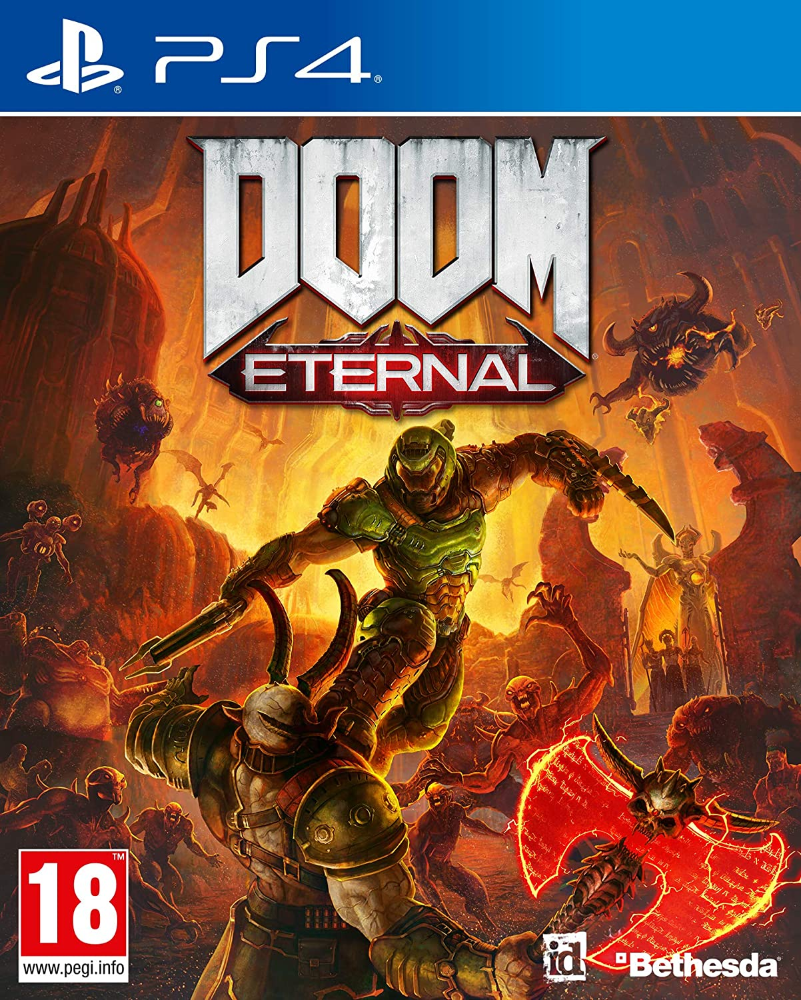
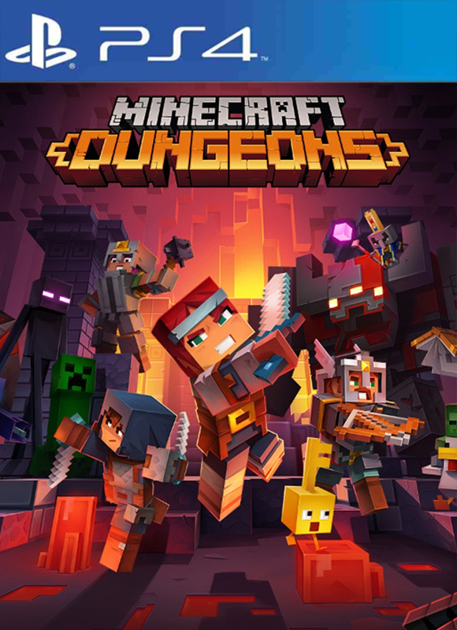

-

£15.99
- Doom is a first-person shooter presented with early 3D graphics. The player controls an unnamed space marine—later termed the Doomguy—through a series of levels set in military bases on the moons of Mars and in Hell. To finish a level, the player must traverse through the area to reach a marked exit room.
-

£15.99
- Horizon Zero Dawn is an action role-playing game developed by Guerrilla Games and published by Sony Interactive Entertainment. The plot follows Aloy, a hunter in a world overrun by machines, who sets out to uncover her past. The player uses ranged weapons, a spear, and stealth to combat mechanical creatures and other enemy forces.
-

£16.99
- God of War[a] is an action-adventure game developed by Santa Monica Studio and published by Sony Interactive Entertainment (SIE). Released on April 20, 2018, for the PlayStation 4 (PS4), it is the eighth installment in the God of War series, the eighth chronologically, and the sequel to 2010's God of War III.
-

£34.99
- Embark on a journey as the Prince to prevent the powerful Sands of Time to fall into the hands of the treacherous Vizier. Master the Sands of Time and use your dagger to control time itself. Fight cursed enemies and solve puzzles along the way.
-

£16.99
- Days Gone is a 2019 action-adventure survival horror video game developed by SIE Bend Studio and published by Sony Interactive Entertainment for the PlayStation 4. Set in a post-apocalyptic Oregon two years after the start of a global pandemic, former outlaw-turned-drifter Deacon St. John discovers the possibility of his wife Sarah still being alive, which leads Deacon on a quest to find her.
-

£12.99
- The player controls Ethan Winters from a first-person perspective as he searches the Baker house for his missing wife.Although Ethan is a civilian with few combat skills, he is able to arm himself with a variety of weapons including handguns, shotguns, flamethrowers, explosives and chainsaws against the Baker family and a humanoid form of fungus known as the "Molded".
-

£14.99
- The appeal of the Gran Turismo series is due significantly to its graphics, a large number of licensed vehicles, attention to vehicle detail, accurate driving physics emulation, and the ability to tune performance, hence the subtitle "The Real Driving Simulator", incorporated to the franchise's iconography since Gran Turismo 4.
-

£44.99
- The 2021 FIA Formula One World Championship is a planned motor racing championship for Formula One cars which will be the 72nd running of the Formula One World Championship.[a] It is recognised by the Fédération Internationale de l'Automobile (FIA), the governing body of international motorsport, as the highest class of competition for open-wheel racing cars.
-
£47.99
- Sniper Elite 4 is a tactical shooter game with stealth elements, played from a third-person perspective. When the player kills an enemy using a sniper rifle from a long distance, the X-Ray kill cam system will activate, in which the game's camera follows the bullet from the sniper rifle to the target, and shows body parts, bones or internal body organs being broken or ruptured by the bullet.
-
£24.99
- The game is played from a third-person perspective. The player may freely roam in its interactive open world, a fictionalized version of the Western United States and Mexico, primarily by horseback and on foot. Gunfights emphasize a gunslinger gameplay mechanic called "Dead Eye" that allows players to mark multiple shooting targets on enemies in slow motion.
-

£44.99
- The Last of Us Part II is an action-adventure game played from a third-person perspective featuring elements of the survival horror genre. The player traverses post-apocalyptic environments such as buildings and forests to advance the story. The player can use firearms, improvised weapons, and stealth to defend against hostile humans and cannibalistic creatures infected by a mutated strain of the Cordyceps fungus.
-

£39.99
- Watch Dogs is an action-adventure game, played from a third-person view. The player controls hacker Aiden Pearce, who uses his smartphone to control trains and traffic lights, infiltrate security systems, jam cellphones, access pedestrians' private information, and empty their bank accounts. System hacking involves the solving of puzzles.
-
£29.97
- Final Fantasy VII Remake is the first in a planned series of games remaking the 1997 PlayStation game Final Fantasy VII. It covers the first section of the original game, set in the metropolis Midgar Tim Rogers of Action Button estimated that Remake covers approximately 30% of the original game's story.
-
£49.99
- Cyberpunk 2077 is played in a first-person perspective as V, a mercenary whose voice, face, hairstyles, body type and modifications, background, and clothing are customisable. Stat categories—Body, Intelligence, Reflexes, Technical, and Cool—are influenced by the character classes that players assume, which are NetRunner (hacking), Techie (machinery), and Solo (combat).
-

£19.99
- Fight your way through an all-new action-adventure game, inspired by classic dungeon crawlers and set in the Minecraft universe! Up to four friends can play together, or you can brave the dungeons alone. Battle new-and-nasty mobs across action-packed, treasure-stuffed, wildly varied levels, all in an epic quest to defeat the evil Arch-Illager!
By using this site you agree to our TermsAndConditions. Please Acceptthese before using our site.